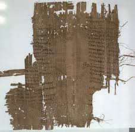

Projects
Sortes Alearum
 A webpage simulating an ancient Greek dice-oracle: sort of like an ancient fortune-cookie.
Get the oracle's divine advice straight from inscriptions found at historical sites
in modern Turkey.
A webpage simulating an ancient Greek dice-oracle: sort of like an ancient fortune-cookie.
Get the oracle's divine advice straight from inscriptions found at historical sites
in modern Turkey.
The Oracles of Astrampsychus

The Sacred Text
 A short myth-making game / personality test made for GMTK Jam 2019,
about the process of redaction that formed the great religious texts and canons.
As a would-be god, choose your one true message, and see where it ends up.
A short myth-making game / personality test made for GMTK Jam 2019,
about the process of redaction that formed the great religious texts and canons.
As a would-be god, choose your one true message, and see where it ends up.
The Flock and the Flood
 In this game created for the Ludum Dare 51, you must protect and grow your flock
of sheep for as long as you can, until the temple their efforts built is all that
remains above the tides.
In this game created for the Ludum Dare 51, you must protect and grow your flock
of sheep for as long as you can, until the temple their efforts built is all that
remains above the tides.
The Fall of Mezentople
 Created for the Ludum Dare 50, The Fall of Mezentople is a game about the shape
and color of decline. Mezentople will fall. But your choices shape the course.
Explore the late years of a fading empire at the end of antiquity, as you make choices
affecting the vibrancy and cohesion of eight unique cities.
Created for the Ludum Dare 50, The Fall of Mezentople is a game about the shape
and color of decline. Mezentople will fall. But your choices shape the course.
Explore the late years of a fading empire at the end of antiquity, as you make choices
affecting the vibrancy and cohesion of eight unique cities.